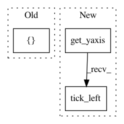

1d62b0c431c821671ef8f251d14cc8ae79b93c76,examples/applications/plot_over_sampling_benchmark_lfw.py,,,#,42
Before Change
plt.plot(mean_fpr, mean_tpr, linestyle="--",
label="{} (area = %0.2f)".format(name) % mean_auc, lw=LW)
plt.xlim([-0.05, 1.05])
plt.ylim([-0.05, 1.05])
plt.xlabel("False Positive Rate")
plt.ylabel("True Positive Rate")
After Change
ax.spines["top"].set_visible(False)
ax.spines["right"].set_visible(False)
ax.get_xaxis().tick_bottom()
ax.get_yaxis().tick_left()
ax.spines["left"].set_position(("outward", 10))
ax.spines["bottom"].set_position(("outward", 10))
plt.xlim([0, 1])
plt.ylim([0, 1])
In pattern: SUPERPATTERN
Frequency: 3
Non-data size: 3
Instances
Project Name: scikit-learn-contrib/imbalanced-learn
Commit Name: 1d62b0c431c821671ef8f251d14cc8ae79b93c76
Time: 2017-03-30
Author: g.lemaitre58@gmail.com
File Name: examples/applications/plot_over_sampling_benchmark_lfw.py
Class Name:
Method Name:
Project Name: scikit-learn-contrib/imbalanced-learn
Commit Name: 1d62b0c431c821671ef8f251d14cc8ae79b93c76
Time: 2017-03-30
Author: g.lemaitre58@gmail.com
File Name: examples/ensemble/plot_balance_cascade.py
Class Name:
Method Name:
Project Name: scikit-learn-contrib/imbalanced-learn
Commit Name: 1d62b0c431c821671ef8f251d14cc8ae79b93c76
Time: 2017-03-30
Author: g.lemaitre58@gmail.com
File Name: examples/ensemble/plot_easy_ensemble.py
Class Name:
Method Name: